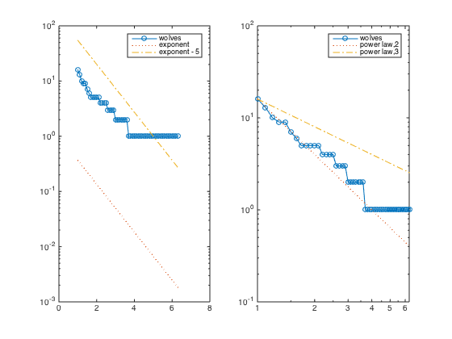
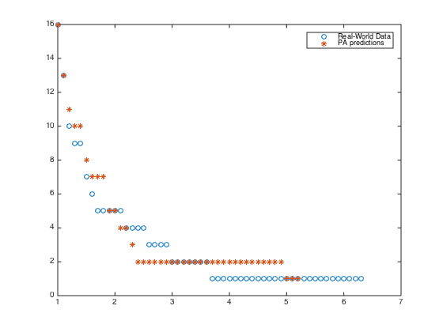
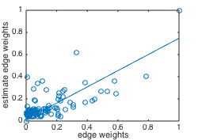

VALIDATING THE WOLF DATASET (Prestige-based Attachment Model)
The number in a cell represents the number of occasions on which the row wolf was seen to exhibit a "low posture" display directed toward the column wolf.
Source: <http://moreno.ss.uci.edu/wolf.dat>
Contents
Original Data
close all
data = [ 0 0 0 0 0 0 0 0 0 0 0 0 0 0 0 0
16 0 2 0 1 1 0 1 0 0 0 0 0 0 0 0
0 4 0 4 1 0 0 1 0 0 0 0 0 0 0 0
144 1 38 0 0 0 0 0 0 0 0 0 0 0 0 0
31 6 31 12 0 0 0 3 0 0 0 0 0 0 0 0
138 25 0 74 2 0 5 15 0 4 1 1 3 0 5 5
100 52 123 61 8 57 0 5 1 0 2 1 0 0 0 0
0 32 0 0 0 44 22 0 2 18 3 1 4 0 1 9
37 3 3 9 0 2 1 8 0 0 1 2 2 0 0 0
61 69 73 37 2 38 4 0 3 0 0 0 0 0 0 0
182 0 69 27 4 20 14 16 2 9 0 1 1 1 1 1
154 0 60 40 5 19 16 9 1 11 0 0 3 0 3 0
128 0 69 122 17 45 20 47 6 19 0 125 0 1 1 1
20 165 15 25 2 7 9 5 3 3 86 29 14 0 5 4
201 0 49 56 23 82 21 49 7 53 177 84 34 7 0 3
29 136 41 24 1 26 78 3 42 6 46 23 12 0 7 0];
Preprocessing
Preprocessing on data to make it lower triangular and normalized.
clc n = size(data,1); data = tril(data); data(1,1) = 1; data_normalized = data ./ (sum(data,2) * ones(1,n)) ; H = data_normalized>0; W = data_normalized + data_normalized'; W(1,1) =1;
Degree Distribution
Here we compare the degree distribution with exponential and power law distributions.
ccdf_x = 1:.1:max(sum(W,2)); % the partitions of the x-axis df_hist = hist(sum(W,2),ccdf_x); ccdf_hist = cumsum(df_hist(end:-1:1)); ccdf_hist = ccdf_hist(end:-1:1); % computing the cummulative degree distribution subplot(121) semilogy(ccdf_x, ccdf_hist,'-o') hold on semilogy(ccdf_x, exp(-ccdf_x),':') % approximation of power law semilogy(ccdf_x, exp(5-ccdf_x),'-.') % approximation of power law legend('wolves','exponent','exponent - 5') subplot(122) loglog(ccdf_x, ccdf_hist,'-o') hold on loglog(ccdf_x, n * ccdf_x.^(-2),':') % approximation of power law loglog(ccdf_x, n * ccdf_x.^(-1),'-.') % approximation of power law legend('wolves','power law,2','power law,3')
Strength Distribution Predictions
Using the hierarchy network, we generate the PA model and compare the predicted strength distributions and real distribution.
Wg = genericModel(H,'PA'); ccdf_x_g = 1:.1:max(sum(Wg,2)); % the partitions of the x-axis df_hist_g = hist(sum(Wg,2),ccdf_x_g); ccdf_hist_g = cumsum(df_hist_g(end:-1:1)); ccdf_hist_g = ccdf_hist_g(end:-1:1); % computing the cummulative degree distribution figure('OuterPosition', [400 400 250 250]) loglog(ccdf_x,ccdf_hist,'o') hold on loglog(ccdf_x_g,ccdf_hist_g,'*') legend('Real-World Data','PBA predictions') xlabel('node strength') ylabel('frequency') set(gcf,'PaperPositionMode','auto'); print('figs/wolves_distribution','-depsc','-tiff')
Edge Comparison
In the previous section we showed the predictions of strength distributions. In this section, we compare the single weights with each other.
edges = tril(W,-1); edgesG = tril(Wg,-1); figure('OuterPosition', [400 400 250 250]) plot(edges(:),edgesG(:),'o'); lsline xlabel('edge weights') ylabel('estimate edge weights') set(gcf,'PaperPositionMode','auto'); print('figs/wolves_regression','-depsc','-tiff')